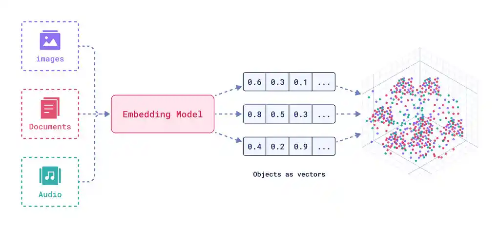
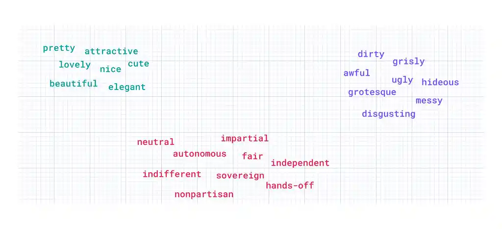
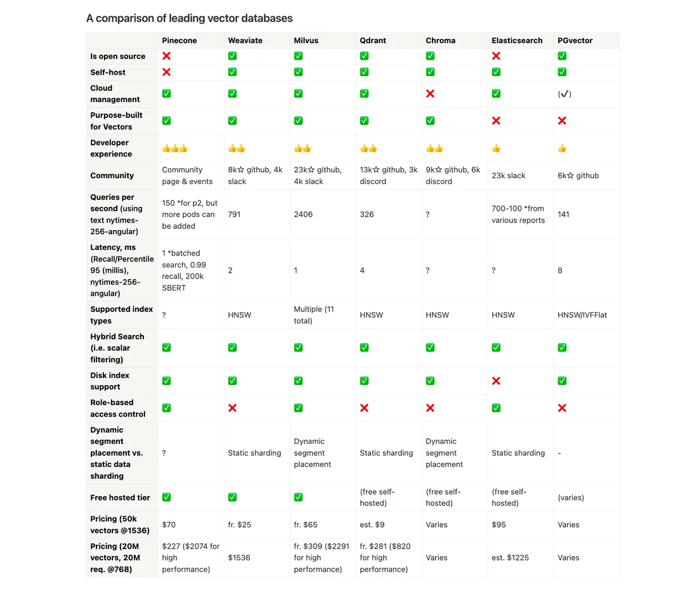
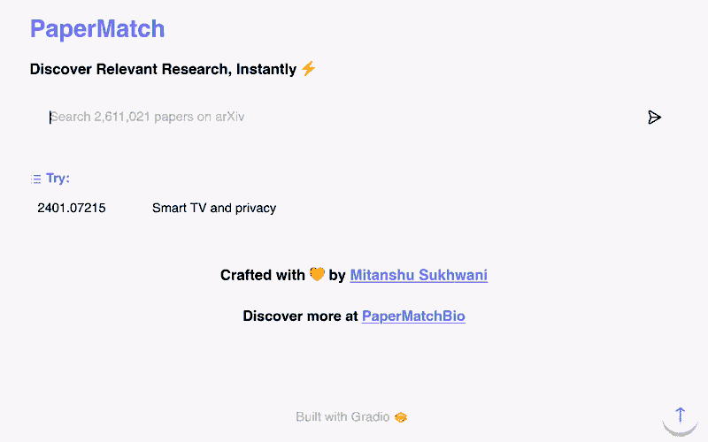

Building a Paper Recommendation Engine with arXiv Abstracts and Milvus
2025-06-07
In this post, I’ll walk you through how I created a paper discovery tool using vector embeddings of scientific papers from arXiv and milvus, an open-source vector database.
The site is live at papermatch.me, where you can search for papers in the arXiv database using arXiv ID or any abstract (from anywhere) you provide.
To represent the papers in a form that can be compared effectively, I used vector embeddings.
Embedding models (aka Neural Networks) take in bits of data and give out vectors in an \(N\)-dimensional space where \(N\) depends on the model architecture.

For this I used the open source model mixedbread-ai/mxbai-embed-large-v1 from Mixedbread.

These fixed-length numerical representations, of the paper abstracts in our case, capture semantic similarity.
I utilized a rather straightforward embedding process:
Source data: Download arXiv metadata from kaggle.
Preprocessing:
Convert the downloaded json to parquet
since python does not play nice to json and is a memory
hog.
Trim the dataframe to keep only arXiv ID and abstract.
Split the dataframe by year for ease of process and continual saving of processed abstracts.
Embed: Pass the abstract to the embedding model
and store the results in a parquet form with columns
['id', 'vector'] which is a milvus compatibe format. It
took \(\sim 20\) hours to process \(\sim 2.5\) million (1991-2024) records on a
RTX 4050 Laptop GPU.
You can find codes for these at mitanshu7/embed_arxiv_simpler. For a slightly complicated process but utilising multiprocessing to speed up your workflow, checkout mitanshu7/embed_arxiv.
Once I had the embeddings, I needed a way to store and efficiently search through them. This is where milvus comes in handy. It allows for fast and scalable vector similarity searches, making it perfect for this task.
Something that helped me choose milvus:

Here’s how the process works to handle the interaction between my embedding data and Milvus:
Setup: I installed and ran Milvus using podman on my Oracle Cloud Instance from the script here. I had to modify some parameters to make it compatible with SELinux.
Data Import: I imported the abstract
embeddings into Milvus. This created a vector collection, which Milvus
can efficiently index and search through. I used a FLAT
index which has 100% recall rate and is appropriate for million scale
databases. For more on this, see.
Query for similar papers: When a user inputs an arXiv ID, it is first searched in the local vector database, if not found then an API request is sent to arXiv for the details or when inserting abstract (or description), it is first embedded using the same model. Then, Milvus is queried to return the most similar papers based on the cosine similarity of their vectors. For more on this, see.
To serve the app, I chose Gradio, a simple yet powerful framework for building web UIs for machine learning apps. I integrated Gradio with my backend to allow for a user-friendly interaction with the service. To increase response rate and decrease server load, I cache all the queries.

You can find codes for these at mitanshu7/PaperMatch.
Currently, the site only indexes papers from arXiv, which provides open access to abstracts for all papers. In the future, I plan to expand this system to include other academic journals, even if they are behind paywalls. Since most journals make their abstracts freely available, I can embed those abstracts and add them to the Milvus vector database alongside arXiv papers. This would enable researchers to discover related papers across a wider range of sources without needing access to full-text content.
The goal is to create a more comprehensive paper discovery tool that covers a variety of fields and journals, helping users find relevant research more effectively. Integration with publishers and APIs that provide access to abstracts will be key to this expansion.
By combining transformer-based embeddings with Milvus, I was able to build an efficient and scalable paper recommendation engine. The flexibility of both the embedding model and Milvus allows the system to handle large-scale data, making it a powerful tool for researchers and academics to discover relevant research papers.
Did I mention that you can try it out at papermatch.me? :)
Please email me with any feedback/comments/suggestions!